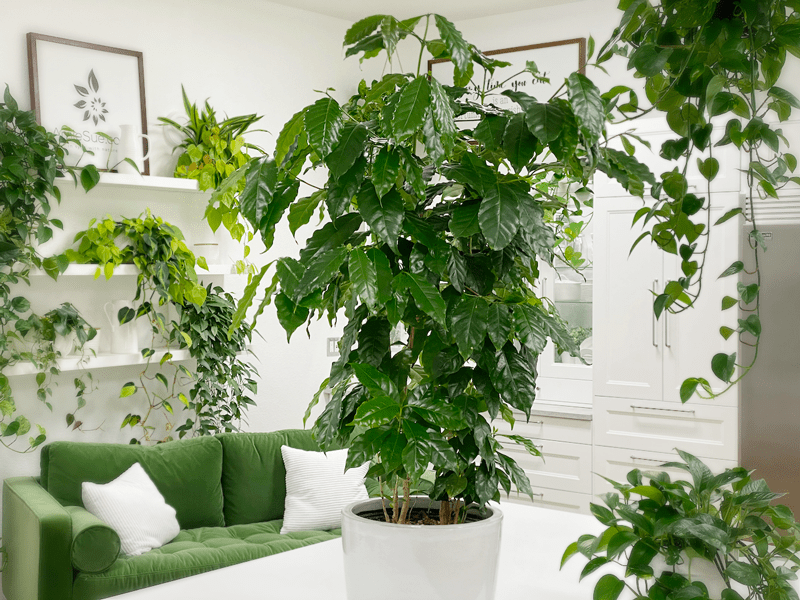
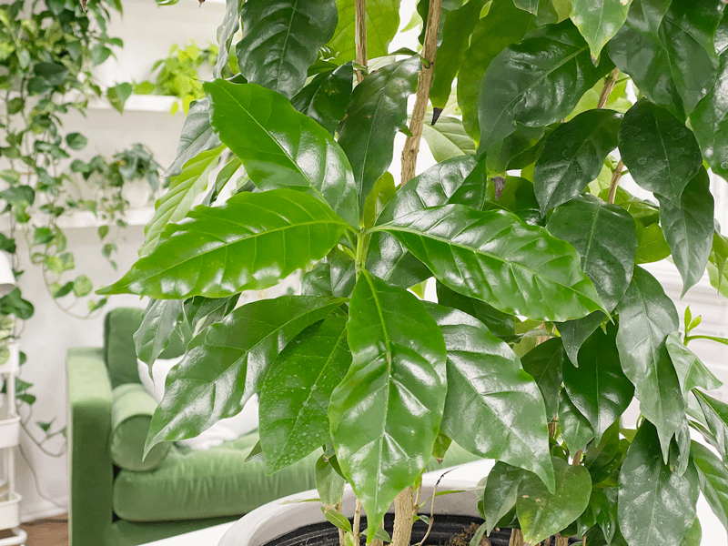

Coffee trees have willowy stems, waxy leaves, and when they receive the ideal amount of sunlight, they can grow up to 15 feet indoors. However, the word ideal is key here, as this is pretty hard to achieve. If growing conditions are not spot on, you can expect an average growth of 3-6 feet, considering the average lighting conditions in our homes.

Are you a coffee connoisseur? If so, you will be tickled to learn that these plants are the very same plants your favorite coffee beans are harvested from in countries like Ethiopia, Mexico, Colombia, and all along the coffee belt. Yet again (hangs head), in our homes this won’t happen. But a girl can dream, can’t she?!
They require so much sun, humidity, and constant warmth, conditions nearly impossible to replicate at home. When mature, at about 3-5 years old, they may produce little white, slightly sweet-smelling flowers, but even that is rare. These flowers are followed by green fruits which change to red then to almost black as they ripen, a process that takes several months. Inside each ripened fruit are two seeds (or beans) that when properly roasted can be ground and made into coffee.

As with most plants, we lean on them for their beauty and the life that they bring to our home. The coffee tree is very beautiful, lush, and can be quite the communicative and forgiving houseplant, telling you exactly when it needs to be watered, through the drooping and dull leaves. So even if your plant never flowers or produces coffee berries…that’s okay, because it’s a great companion to hang out with while you enjoy your cup of coffee!
I have come to learn that coffee plants thrive in abundant, indirect light. The key is to avoid harsh, direct sun, as this can burn the leaves. If the only space you have with enough light has rays of light beaming into the room, I advise a sheer curtain in that window to filter direct light. I have my coffee tree about five feet away from a north-facing window and so far, so good.